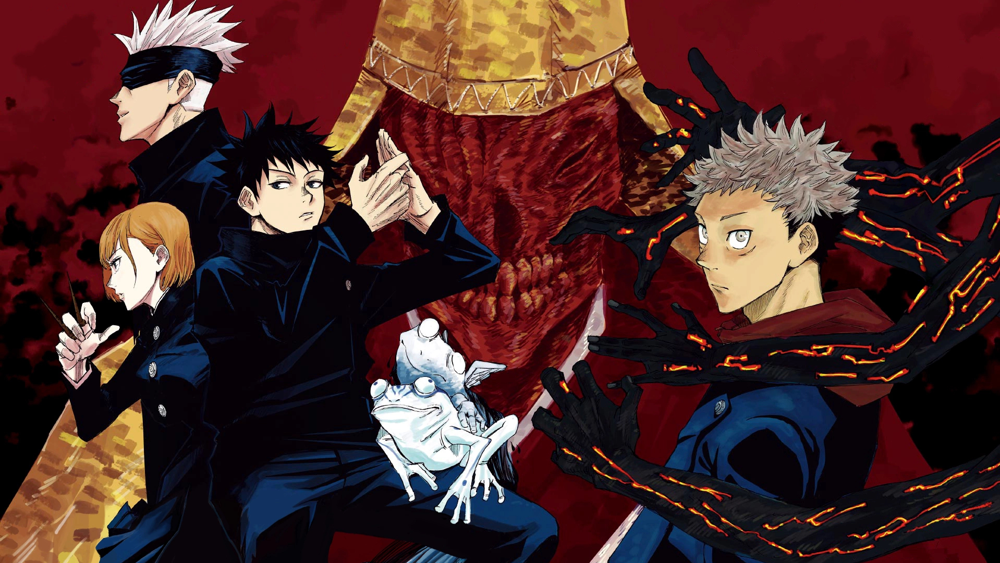

Jujutsu Kaisen
Yuuji Itadori é um estudante do ensino médio que vive em Sendai com seu avô. Ele evita regularmente a equipe de pista devido à sua aversão ao atletismo, apesar de seu talento inato para o esporte. Em vez disso, ele decide ingressar no Clube de Pesquisa Oculta, onde pode relaxar e sair com seus veteranos, e deixar a escola às 17h para visitar seu avô no hospital. Enquanto ele está no leito de morte, seu avô envia duas mensagens poderosas dentro de Yuuji - "sempre ajude as pessoas" e "morra cercado por uma multidão".Cap. 1 Após a morte de seu avô, Yuuji interpreta essas mensagens como uma afirmação - todo mundo merece "uma morte adequada", ele então é confrontado por Megumi Fushiguro, um xamã (巫? Shaman) que o informa de um talismã de alto grau amaldiçoado em sua escola com o qual Yuuji recentemente entrou em contato. Seus amigos no Clube Oculto abriram o talismã, um dedo podre, que atraiu Maldições para a escola, criaturas provocadas por emoções negativas e fortalecidas pelo consumo de poderes mágicos presentes em xamãs ou em tais encantos. Incapaz de derrotar as Maldições devido à sua falta de poderes mágicos, Yuuji engole o dedo para proteger Megumi e seus amigos e se torna o anfitrião de Sukuna, uma poderosa Mald Devido à natureza maligna de Sukuna, todos os xamãs devem exorcizá-lo imediatamente. No entanto, apesar de possuído, Yuuji ainda é capaz de manter o controle sobre seu corpo em sua maior parte. Vendo isso, Satoru Gojou, professor de Megumi, decide levá-lo ao Colégio Técnico Metropolitano de Tóquio para propor um plano a seus superiores - adiar a sentença de morte de Yuuji até que ele consuma todos os dedos de Sukuna, permitindo que eles o matem de uma vez por todas.Cap. 2